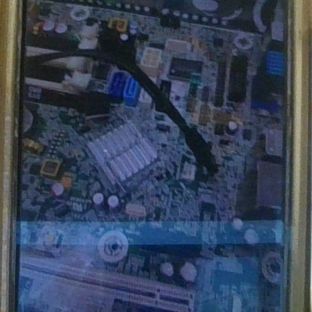
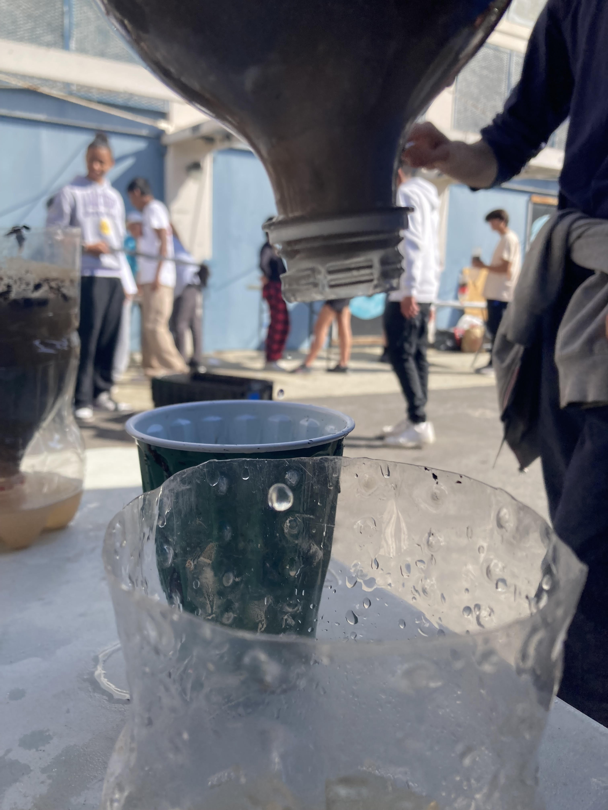
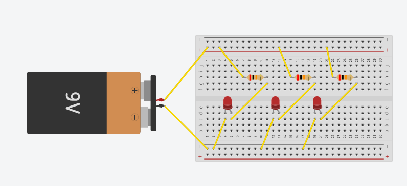
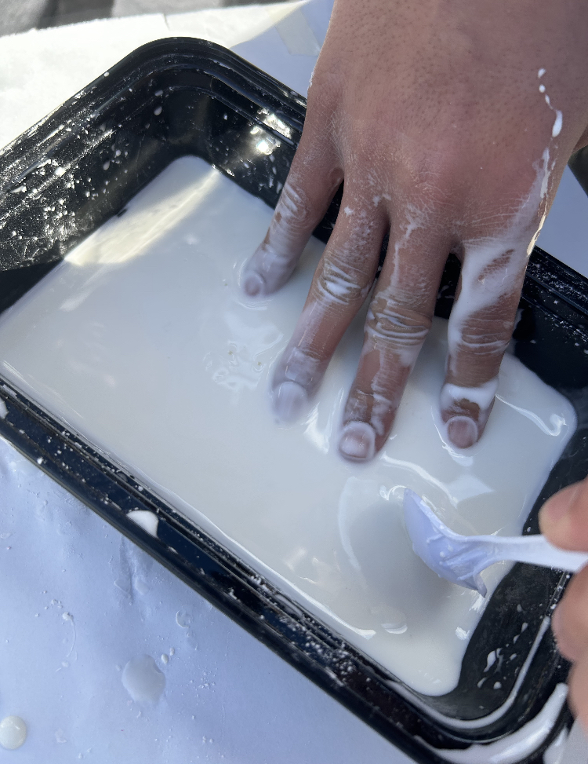
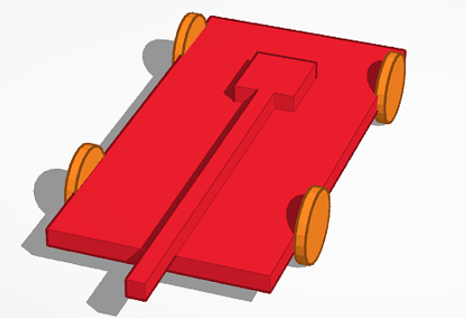
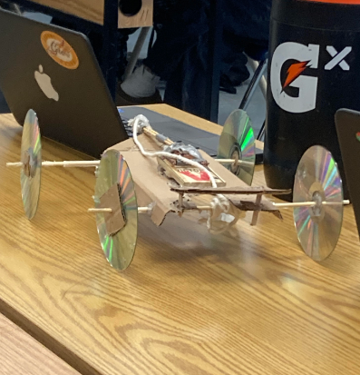
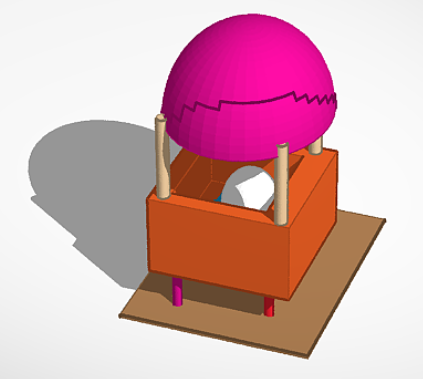
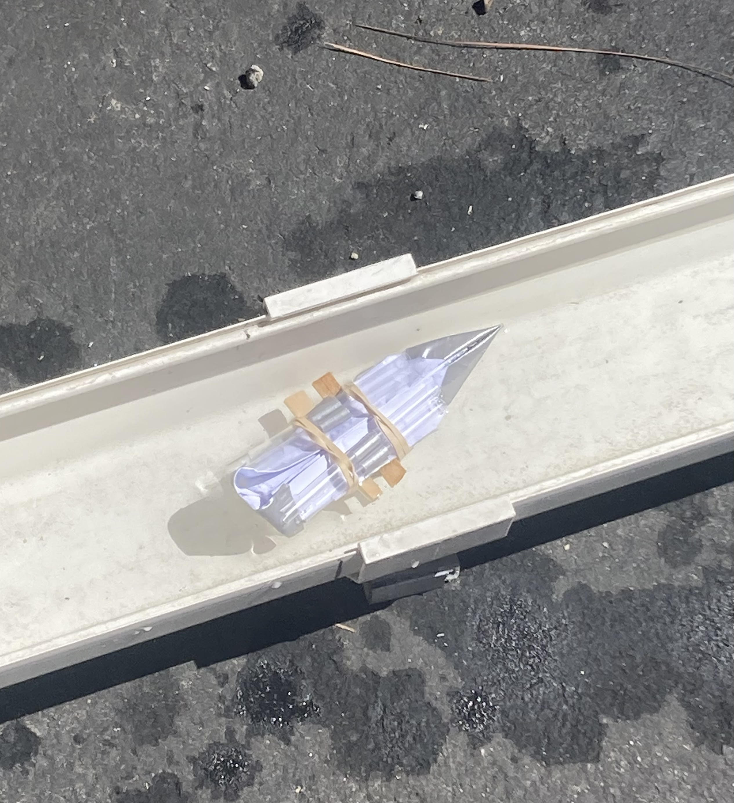

Aaron's website

8/21-8/24 Week 1
Today is Thursday, meaning I am going to my odd classes today.
I have Korean, English, Engineering, and AP Human Geography. After school,
I am going to be catching up on homework from all my classes. This week
was easy and went by pretty quickly. I also tried out for the volleyball team
with a couple friends on Monday and Wednesday. I thought that a few of us would
get cut, but all of us got in. In this week's engineering class, we learned to create
this website and used halfpipes to get a marble into a bucket. The activity was
fun, but took a while and required lots of teamwork and communication.
9/11
Today is Monday, so I have to attend both even and odd classes today. Today is also 9/11,
so there was a car parade in the morning. However, my classmates and I were late to the
entire parade because of an assignment we were working on in first period. The past few
weeks since the first journal entry has still been managable, but there has been a slight
increase in assigned work and homework from every class. Over the past two to three weeks,
we learned and practiced CADing, and designed and started building a series of simple
machines that involved using a baseball in order to make a balloon pop. The activity required
teamwork and communication in order to get things complete quickly.

9/18
Our class experienced difficulties updating our websites this week due to a internet problem
in our classroom. Because of this, we are writing September 18th's journal entry on the 25th.
This week, we worked on physically building our Rude Goldberg chain reaction machine. Our group
built the complete, initial design of the machine. However, we encountered a few problems whiilst
experimenting, so we made minor adjustments. We added support to our build by adding multiple
cardboard triangles on the bottom and replaced the starting pulley with a ramp that a car would
be pushed down from. After the final adjustments of our project were made, we finally tested the
machine. The test was successful, so we were finally done with our project.
9/29
This week, we dissected a computer in order to study the internals of the system.
We split the class into small groups of 2-3 people. I joined Andres and Aidan's group.
We dissected the computer by disassembling panels, cables, and other pieces with
screwdrivers. After we completely disassembled the computer, we had to put the
cables, panels, and systems back into its original places. This took us the entire
period, but it was very fun and engaging. We also filled in a worksheet by coloring
in and labeling all the parts of a computer. This took us much shorter to compelete.

10/6
October has finally arrived. This week, we built a prosthetic hand that fully
functions. We had limited supplies, so we used carboard, strings, duct tape,
and scissors to make the artificial hand. We divided our class into groups of 3
people. I got into groups with Andres and Aidan again. While we were building
the hand, Aidan had to go to the restroom, so Andres and I had to do most of
the work. We used Andres hand as a model to trace the hand onto the cardboard,
and cut it out. Then, we cut the joints and added strings to the tips of the fingers.
Finally, we cut a hole in the palm of the hand and stuffed the strings through the hole,
so when we pulled it, the hand would be able to pick up a water bottle.
10/20
2/3 of the month has already gone by, but it's only felt like a week has gone by.
Since the last journal entry, we started learning about aerospace engineering.
We filled out some worksheets and started designing bottle rockets. We paired up
into groups of 2-3 people. Usually, I would pair up with Aidan and Andres, but
this time, I paired up with David and Brooklyn. We designed the rocket through CAD
and then brought 2L bottles to start building the physical model. We attached a pencil
on one side and attached three cardboard wings on the three other sides. We drew a
gingerbread design on the middle wing, so we could distinguish it from the other bottles.
We went out to test the rocket today and our rocket went decently far.
10/26
Thanksgiving break is finally in less than a month. This week, we learned about
environmental engineering. We filled out a worksheet about environmetal engineering
after we watched a couple videos on environemtnal engineering and a presentation.
For our project, we constructed a water filtration system using a bottle, sand, rocks,
cotton, and pebbles. After we filled the bottle with these materials, we poured dirty water
into the bottle and watched it filter out the dirt and other filaments, leaving clean water
as the result. Our water filtration system worked quite extravagantly.

11/3
It is already November. Thanksgiving break is basically in two weeks. This week, we
took a quiz on environmental engineering and started learning about electrical
engineering. We listened to the teacher's presentation, which was longer than usual
and then filled out a easy worksheet based on the information presented. In the next
class, we completed two labs. In the first lab, we learned how to breadboard. We used
the breadboard to light an LED bulb using batteries, resistors, and an anode. After this
quick lab. We moved onto the second lab where we learned to make parallel and series resistors
using breadboards. We used stronger batteries, more resistors, and mroe anodes to complete thiis
lab. The second lab was a bit more difficult.

11/17
Today is the last day of school before Thanksgiving break. I am very excited.
Since the last journal entry, we learned about electrical engineering. We were presented
a couple slides on electrical engineering, followed by physical breadboarding. I was
sick, so I was not able to attend class on Tuesday. When I got back, I was paired up with Aiden and Andres
again. We had a couple challenges to complete and we were just barely able to finish it before class
ended. After we did all this, we started learning about business engineering. We have not been
able to start any projects yet.
12/1
We are back from Thanksgiving Break. My homework load has been piling up, so I have not been able
to get a lot of sleep. Because of this, I was tired throughout the entire week. In this class, we
presented our business pitch slides and took a test on business engineering. I think I did decent
on the test. I also enjoyed presenting the slides with Aidan and Andres because it was funny.
We started learning about civil engineering. We were presented a couple slides and watched a few
videos. However, I accidentally fell asleep for a little bit. We did not begin any projects yet.
1/12
We listened to a presentation on chemical engineering today. After the brief presentation,
we started an oobleck experiment. We mixed cornstarch and water to make a substance with
unique properties. We started by pouring all over our cornstarch into a small container
and added bits of water until we got oobleck-like consistency. This experiment was fun and
easy to do. After we cleaned up by washing our hands and cleaning the containers for the next class.

1/29
Over the past 2 weeks, we researched, brainstormed, sketched, and CADded our mousetrap car.
First, we watched a video about Mark Rober's mousetrap car in order to learn the basics and
fundamentals of making a mousetrap car. Then, we wrote down notes and started sketching out the
design of our car. After we designed and wrote the measurements of our car, we CADded out the
car. Finally, we uploaded both the sketch and CAD onto an assignment. We also filled out a packet
containing notes about mousetrap cars.

2/14
We are continuing with our mousetrap car project. Mark and I started building our car with cardboard
, straws, wooden sticks, a mousetrap, string, and hot glue. We struggled in the beginning part of
constructing our car. We had to go through multiple iterations because the dimensions of the cardboard
were off. After multiple classes and help from other students, we finally got the finished product.
Our car travelled 22 ft. However, we still have more iterations that we will have to complete.

2/28
We set our completed mousetrap car aside and tried experimenting with a completely new design. We started
completely over from scratch with new materials and got to work. We tried working with two wheels on the inside
of the car instead of all four outside. We also tried a wider and longer base with a much longer rod.
After we completed the second car, we went straight to testing it. Although the second car looked shabby and rushed,
we still had faith in it to go far. However, it ended up only travelling 2 feet. We figured that because the rod
was too long, it had too much tension in the string, causing the car to barely move. Being disappointed with our second
design, we set it aside and went back to working and modifying our first and orignal car. We tried experimenting with the
rod length to make it travel farther. By slightly extending the length of the rod, we were able to make it travel significantly
farther. Satisfied with our final design, we used it as our final iteration/design. We conducted a class test,
and received 3rd place out of 4 teams we were competing with.
3/4
We started a new project in class. This project involves protecting an egg with various materials
and dropping it from a height to test if the egg would break or not. We are starting this project
with a CAD of the model, or build, protecting the egg. Valentin and I brainstormed and CADded an
egg encapsulated in a small basket, layered with cotton on the bottom to soften the landing a bit.
We also added a parachute made out of plastic bags, that would release from the top cone of the basket.
Finally, we added another layer below the basket, made out of cardboard and straws, that would also
help break the impact of the landing, protecting the egg. We think that this design will work nicely.

3/12
Our final design had an egg encased inside two boxes, one smaller and the other bigger, with cotton
surrounding the egg on both layers. After constructing the cardboard boxes, we built a platform that
would break the fall of the egg. We attached four straws onto the bottom of the box like rods and
attached the straws onto a cardboard platform with pieces of straws glued on the bottom to absorb the
impact. Then, we added a parachute mechanism with a balloon inside the parachute at the top of the box.
After this, Valentin added a quick, final addition by placing the entire build on a triangular-like
cardboard model. We were the second last group to go, due to Valentin's final modification. The design
worked well as planned, with the parachute slowing the fall and the cardboard platform breaking the impact.
The egg was safe and unimpacted by the two-story fall.
4/3
For the past two weeks, we have been working on a gutter boat project. The goal of the project is to
make a paper boat that can travel a maximum of 500cm of the gutter. I worked with Valentin in this
project. We were given a set of materials including toothpicks, straws, paperclips, popsicle sticks,
tissue, post-it notes, pipe cleaners, duct tape, a cup, construction paper, water balloons, and
rubber bands. Additionally, we were given requirements that had to be met for our boat to travel
across the gutter. Valentin and I made a quick CAD of our design, using construction paper, water
balloons, duct tape, post-it notes, popsicle sticks, paper clips, straws, and toothpicks. After
experimenting with the materials, we finally built our final design, which included paper, a cup,
rubber bands, straws, duct tape, and popsicle sticks. Finally, we tested our design using two blows
per group member. It went a total distance of 44 centimeters. We think we can improve these results
by making our boat lighter, more durable, and more aerodynamic.
